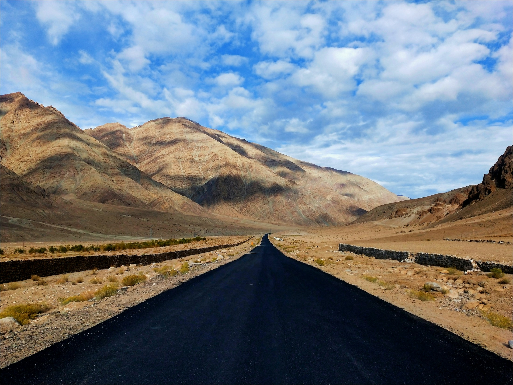

MOUNTAINSLEH · NUBRA · PANGONG
The high-road feeling.
Two easy nights in Leh before the high passes, apricot villages and Pangong’s changing blues. A private-SUV loop with time to acclimatize.
Leh → Nubra5–6 h · approx. 120 km by SUV
- 6 nights & breakfast
- Private SUV & driver
- Local guiding & permits
Families: ages 12+; two acclimatization nights included.
Best season: May–Sep